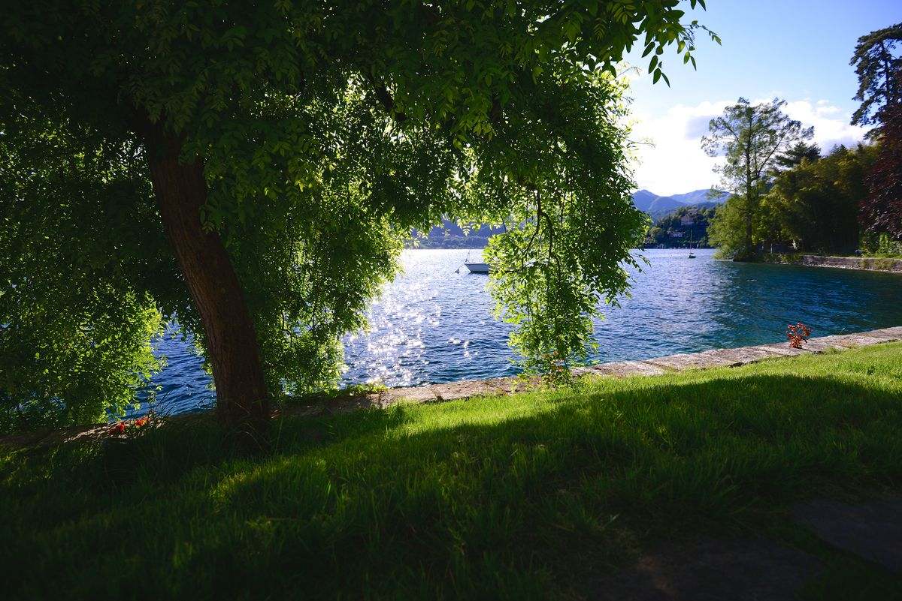
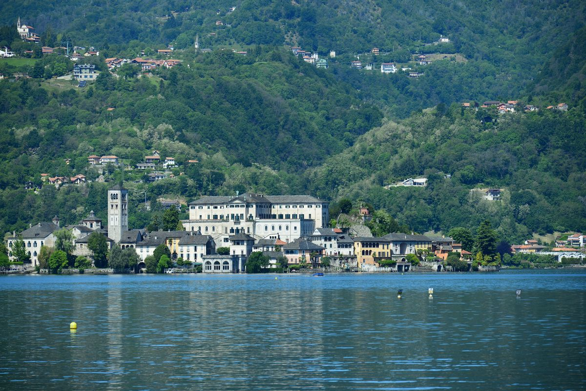

Der Ortasee ist klein genug, um ihn zu umrunden: rund 40 Kilometer für den kompletten Rundweg, ein langer, aber gut machbarer Tag — oder zwei bequeme, wenn man teilt. Diese Zahl steht in jedem Reiseführer. Was dort seltener steht: Der komplette Rundweg ist selten die beste Verwendung eines Tages hier, denn das schönste Gehen verläuft senkrecht und nicht waagrecht. Es sind die Wege, die sich vom Wasser lösen und Ihnen den See auf einmal zurückgeben.
Der komplette Rundweg, ehrlich beurteilt
Ihn ganz zu gehen bedeutet gut vierzig Kilometer mit ordentlichem Auf und Ab und Abschnitten, auf denen die Route an der Straße entlangführt statt durch den Wald. Es ist befriedigend, ihn gemacht zu haben. Abschnitt für Abschnitt ist es nicht das schönste Gehen am See.
Wenn Sie ihn wollen: auf zwei Tage aufteilen, mit einer Nacht am anderen Ufer, und im Frühling oder Herbst gehen — im August sind die tiefen Abschnitte heiß und schattenlos.
Sacro Monte: zwanzig Minuten, das beste Verhältnis von Mühe zu Ertrag
Vom Ort geradewegs hinauf, auf gepflasterter Straße mit Kopfsteinpflaster und einzelnen Stufen. Zwanzig Minuten bringen Sie in einen Wald mit zwanzig Kapellen des 17. Jahrhunderts und — hier entscheidender — zu einer Reihe von Öffnungen, an denen der ganze See unter Ihnen erscheint, mit der Insel in der Mitte.
Das ist die Tour, wenn Sie nur eine machen. Und es ist die, die auch mit Kindern funktioniert und mit Leuten, die sich nicht für Wanderer halten.

Madonna del Sasso: der weiteste Blick überhaupt
Am Westufer steht eine Kirche auf einem Felssporn hoch über dem Wasser, und die Terrasse davor bietet die vollständigste Aussicht auf den Ortasee: beide Ufer, die Insel, die Berge, die den See im Norden schließen. Es ist das Bild ganz oben auf dieser Seite.
Sie können fast bis hinauf fahren und das letzte Stück gehen, oder vom See aus für einen halben Tag aufsteigen. In jedem Fall bei klarem Wetter: Der ganze Sinn liegt darin, wie weit man sieht.

Die Uferwege
Nördlich und südlich von Orta San Giulio verlaufen Wege dicht am Wasser, durch Gärten und kleine Buchten, und verbinden die Uferdörfer. Sie sind flach, schattig und leicht — genau das Richtige für einen heißen Nachmittag oder mit Hund. Sie können eine Stunde hinausgehen, irgendwo essen und mit dem Boot zurückfahren.

Die Hügel dahinter
Über dem Ostufer öffnet sich eine Hochfläche aus kleinen Dörfern, Kastanienwäldern und alten Feldwegen. Der Anello di Ameno, ausgeschildert als Il Quadrifoglio, verbindet mehrere davon zu Runden, die sich kürzen oder verlängern lassen. Es ist stiller als am Ufer, und im Herbst ist es das beste Gehen der Gegend.
Praktische Hinweise
- Untergrund: vielfach Kopfsteinpflaster oder Steinplatten, kein weicher Pfad. Nasser Stein rutscht wirklich — feste Schuhe, keine abgelaufenen Sneaker.
- Jahreszeit: Frühling und Herbst schlagen den Sommer bei allem mit Höhenmetern. Siehe der Ortasee im Herbst.
- Wasser: In den Dörfern gibt es Brunnen, auf den hohen Routen nicht. Mitnehmen.
- Rückweg: Boote verbinden die Dörfer — hin zu Fuß, zurück übers Wasser. Fahrplan vorher prüfen, besonders außerhalb der Saison.
Vor der Haustür beginnen
Ein Vorteil davon, am See zu wohnen statt darüber: Die Touren beginnen dort, wo Sie sind. Von der Villa Volpe sind Uferweg und Ort wenige Minuten zu Fuß entfernt, der Fuß des Sacro-Monte-Hügels nicht viel weiter — Sie sind im Anstieg, bevor der erste Reisebus geparkt hat. Und wenn Sie wieder herunterkommen, liegt der See drei Meter vor der Tür.
Für die Wasserseite des Draußenseins — Baden, Boote, Wakeboard — siehe unseren Guide zu den Outdoor-Aktivitäten am Ortasee. Und wer Wandern, Baden und Dörfer zu einem längeren Aufenthalt verbinden möchte, findet in unserer Übersicht, was man am Ortasee unternehmen kann, auch einen Vorschlag, wie viele Tage man einplanen sollte.